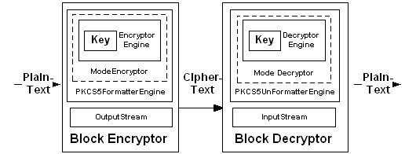

| Factories: A high level approach to encrypting and decrypting data |
The RIM Crypto API is very flexible. It provides developers with the means to accomplish a given task in a variety of different ways. The most common task is the encryption and decryption of data. The Crypto API provides two different ways to accomplish this task.
The engine class provides developers with a low-level, hands-on way of manipulating the encryption and decryption schemes. While this proved effective, it is also complicated and may not be the appropriate method for all developers to use.
The following illustration shows the details of encrypting and decrypting data using the EncryptorEngine and DecryptorEngine classes.

The EncryptorFactory and DecryptorFactory classes allow you to encrypt and decrypt data without worrying about all of the minute details involved in the process of data encryption. If you are not familiar with cryptography, then perhaps the factory classes are for you. The following illustration shows the details of the EncryptorFactory and DecryptorFactory classes.
Encrypting data using the EncryptorFactory class
The following example illustrates the use of the EncryptorFactory and DecryptorFactory classes to encrypt and decrypt a text string.
The EncryptorFactory class accepts an initialization vector. The initialization vector is a byte array full of random data used to further randomize generated data. The data in the array is seeded with the data created when the plaintext is encrypted. Below, the initialization vector, called IV, is created and initialized.
//The Initialization Vector used by the Encryptorfactory
private static final byte[] IV = {
(byte)0x21, (byte)0x92, (byte)0x99, (byte)0x2A, (byte)0x27, (byte)0x4F, (byte)0xC1, (byte)0xA8
};
//The class
public EncryptorFactoryDemo()
{
The EncryptorFactory also accepts a string that defines the details of the encryption. The String consists of 3 concatenated substrings that define (in the following order) the encryption type, the mode and the formatting type. The example uses the string “DES/CBC/PKCS5” which specifies that DES encryption, in CBC mode, with PKCS5 formatting will be used to encrypt the data.
//A String representing the encryption type
String encryptionType = new String ("DES/CBC/PKCS5");
//The original message
String message = new String("This is the test message.");
//The Output stream - this will contain the ciphertext of the message
ByteArrayOutputStream stream = new ByteArrayOutputStream();
//The byte array that will accept the ciphertext from the output stream
byte[] cipherText = new byte[0];
The final two inputs of the DecryptorFactory are the outputstream used to collect the ciphertext and the key used to encrypt the data. The key, in this case a DES key, is created below:
//The key used to encrypt the data
//This key must also be used to decrypt the data
DESKey key = new DESKey();
Note: The details of the generation and distribution of the keys are not specified in these examples. For the purpose of the examples, the same instance of the key is used to encrypt and decrypt the message. In real-world scenario, the protocol would first be agreed upon, then the keys would be created and distributed.
Once the arguments are created, you can create the new EncryptorFactory object and encrypt the plaintext. Below, the getEncryptorOutputStream method of the EncryptorFactory class is called and the resulting outputstream is stored in the variable “encryptor”. Notice also that the encryptor is created within a try clause to catch and display any exceptions that might occur.
try {
//Create the EncryptorFactory
EncryptorOutputStream encryptor = EncryptorFactory.getEncryptorOutputStream( key.getData(), stream, encryptionType, IV );
encryptor.write( message.getBytes() );
encryptor.close();
cipherText = stream.toByteArray();
//Output the messages to the console
//This is included for the sake of the sample
System.out.println("Original Message: " + message);
System.out.println("Ciphertext: " + cipherText);
}
If the encryption is successful, the ciphertext and the plaintext will be outputted to the console.
Decrypting data using the DecryptorFactory class
The decryption process is very similar to the encryption process. Please note however, that the details of the key distribution are not specified in these examples. Instead the data is encrypted and decrypted using the same instance of the key.
Below, the inputstream is created to hold the ciphertext from the encryption process. Again, like the key, the ciphertext was previously transmitted to the receiver by the sender. The details of the transmission are outside of the scope of this chapter. The getDecryptorInputStream method of the DecryptorFactory class is called and the resulting object is created and stored in a variable of type DecryptorInputStream called decryptor.
Because the data may contain extra padding, a for loop is used to extract the data from the outputstream. The following example uses a loop that reads from the inputstream and exits when it reads the first empty block of data. Note also, that the decryption routine occurs within a try block.
ByteArrayInputStream input = new ByteArrayInputStream( stream.toByteArray() ) DecryptorInputStream decryptor = DecryptorFactory.getDecryptorInputStream( symmetricKey, input );
byte[] decrypted = new byte[0];
byte[] temp = new byte[10];
for( ;; ) {
int read = decryptor.read( temp, 0, 10 );
if( read < 0 ) {
// We are at the end of the stream.
break;
}
// Copy.
net.rim.vm.Array.resize( decrypted, read + decrypted.length );
System.arraycopy( temp, 0, decrypted, decrypted.length - read, read );
}
if( Arrays.equals( message.getBytes(), decrypted ) ) {
// Passed.
System.out.println("Encryption/Decryption Passed.");
} else {
// Failed
System.out.println("Encryption/Decryption Failed.");
}
}
The arrays are compared to ensure that the decryption was successful and a message is displayed in the console. If the decryption fails, the exception error messages will be displayed in the console.
In symmetric key cryptography, the same key is used to both encrypt and decrypt the data. For this to work in the real world, the key must be protected with absolute security. If the key is ever compromised, the entire system will collapse. Obviously, the previous examples are seriously flawed since they don’t address any issues relating to the secure creation and distribution of keys.